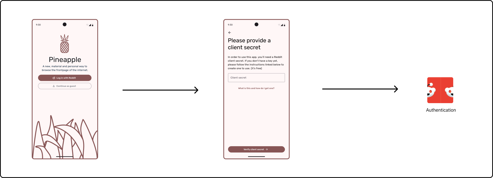

Overview
Pineapple is a natively built Android Reddit client application that follows Material Design 3 styling. The goal of this project was to practice adhering to an industry standard design system, practice API/network call design and continue to familiarize myself with mobile application development practices. Over the time that the project has existed, it has gained traction on GitHub with over 150+ stars and users actively contributing to the project through their own repository forks.
Dynamic color
One of my goals in creating Pineapple was to offer users an alternative visual experience for a Reddit client, one that embraced modern design trends while staying true to Android’s system aesthetics. While there are many third-party Reddit apps that experiment with unique design directions, I noticed a distinct lack of apps that fully adopted the Material Design 3 (M3) language. As someone who appreciates the harmony and flexibility of M3, I set out to create a Reddit client that followed these design principles and incorporated Android's Dynamic Color system.

Dynamic Color, introduced in Android 12, allows apps to adapt their UI colors based on the user’s home screen wallpaper. This feature generates a cohesive color palette derived from the system theme, enabling apps to match the broader aesthetic of the device. By using Dynamic Color in Pineapple, I aimed to make the app feel more native, personal, and visually consistent with the rest of the Android experience.
Adaptable design & free to use
During the start of this project, I designed the app and its authentication flow to work under the assumption that API access was not restricted, but this changed about halfway through the project, where the Reddit API became a paid service for high-volume apps. To design around this and avoid users having to pay for the app, I implemented a “provide your own key” structure, where users are guided through creating their own API key for free and entering it during the onboarding flow. This design saves the key locally, allows users to revoke at any time, and keeps the app free to use for all.
Architecture
Takeaways